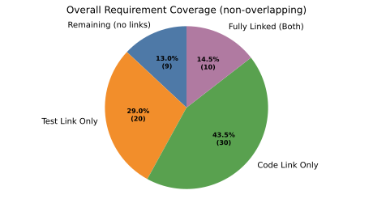
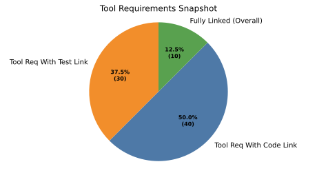

Build Dashboards and Quality Gates#
Use this guide in repositories that consume docs-as-code as a Bazel dependency.
Goals:
Publish traceability dashboards from repository needs.
Export machine-readable metrics.
Enforce CI thresholds with
traceability_gate.
What You Get#
With the docs(...) macro and score_metamodel as well as the `score_metrics extensions enabled, your
repository can:
build an HTML dashboard from its own Sphinx needs,
include external needs from other repositories when desired,
export
needs.jsonandmetrics.jsonfor machine-readable reporting,gate CI on traceability thresholds via
traceability_gate.
Configuration#
Default Behavior (No Configuration Needed)#
By default, score_metrics autodiscovers requirement types from the
repository needs present in the current build.
Requirement types are identified from needs_types entries tagged with requirement.
This is the recommended setup for most repositories.
Optional Override for Requirement Types#
If a repository needs to force a specific set of requirement types, set an
explicit override in docs/conf.py:
score_metrics_requirement_types = "feat_req,comp_req,aou_req"
When this setting is provided, the explicit list is used instead of autodiscovery.
Use score_metrics_include_external_needs = True only in repositories that
intentionally aggregate requirements across module dependencies, such as
integration repositories.
Building the Dashboard#
After building/running any docs and test command (i.e. bazel build //:needs_json or bazel run //:docs_check, bazel run //:docs, bazel test //...):
The documentation build writes metrics.json via score_metrics, and the needs_json artifact contains:
_build/needs.json_build/metrics.json
The dashboard charts and the CI gate both use the same computed metrics.
Inputs for Linkage Metrics#
To get meaningful dashboard and gate values, consumer repositories typically need three inputs:
Requirement and architecture needs in the documentation itself.
Source code references via Reference Docs in Source Code.
Test metadata via Reference Docs in Tests.
If one of those inputs is missing, the related chart or gate metric will remain empty or low.
Choosing Local vs Aggregated Views#
There are two common modes:
Module repository
No setting needed. Local-only scope is the default.
Gate only on the needs owned by the repository itself.
Use this for per-module implementation progress and traceability.
Integration repository
Set
score_metrics_include_external_needs = True.Aggregate requirements across module dependencies when that is the intended repository purpose.
Use this for system or integration-level dashboards.
CI Quality Gate#
Any docs build (bazel run //:docs, bazel run //:docs_check, etc.)
writes metrics.json alongside the build output. Run the gate on the
exported metrics:
bazel run //:docs && \
bazel run //:traceability_gate -- \
--metrics-json bazel-bin/needs_json/_build/needs/metrics.json \
--min-req-code 70 \
--min-req-test 70 \
--min-req-fully-linked 60 \
--min-tests-linked 70
In CI, wire targets through Bazel dependencies so test execution and docs generation happen before the gate target.
In larger repositories, define a dedicated wrapper target for your standard gate thresholds so CI calls a single Bazel target.
Useful flags:
--require-all-linksfor strict 100 percent gating
Recommended Rollout#
For a new consumer repository:
Start with local-only metrics.
Enable
code_targetsand verifysource_code_linkcoverage first.Add test metadata and verify
testlinkcoverage.Introduce modest thresholds in CI.
Raise thresholds over time as the repository matures.
Needpie Usage Guide (Quick and Practical)#
Use these examples as ready-to-copy templates for dashboard-style pie charts.
Tips for readable charts#
Keep labels short and audience-friendly.
Put the most important category first.
Use high-contrast colors that are easy to distinguish.
Avoid red/green-only combinations when possible.
Recommended color palette#
This palette is generally easier to read:
#4E79A7(blue)#F28E2B(orange)#59A14F(green)#B07AA1(purple)
Example 1: Overall view (including remaining/unlinked)#
.. needpie:: Overall Requirement Coverage (non-overlapping)
:labels: Remaining (no links), Test Link Only, Code Link Only, Fully Linked (Both)
:colors: #4E79A7, #F28E2B, #59A14F, #B07AA1
:filter-func: score_metrics.sphinx_filters.get_non_overlapping_link_metrics
This chart shows:
remaining requirements (calculated from total),
requirements with test link,
requirements with code link,
fully linked requirements.

Example 2: Focused view (no total-based remainder)#
This chart shows direct values only (no remaining slice):
tool requirements with test link,
tool requirements with code link,
overall fully linked requirements.

Presentation checklist#
Before publishing, quickly verify:
labels are understandable for non-technical readers,
colors are distinct and readable on your page theme,
title clearly says what the chart represents.